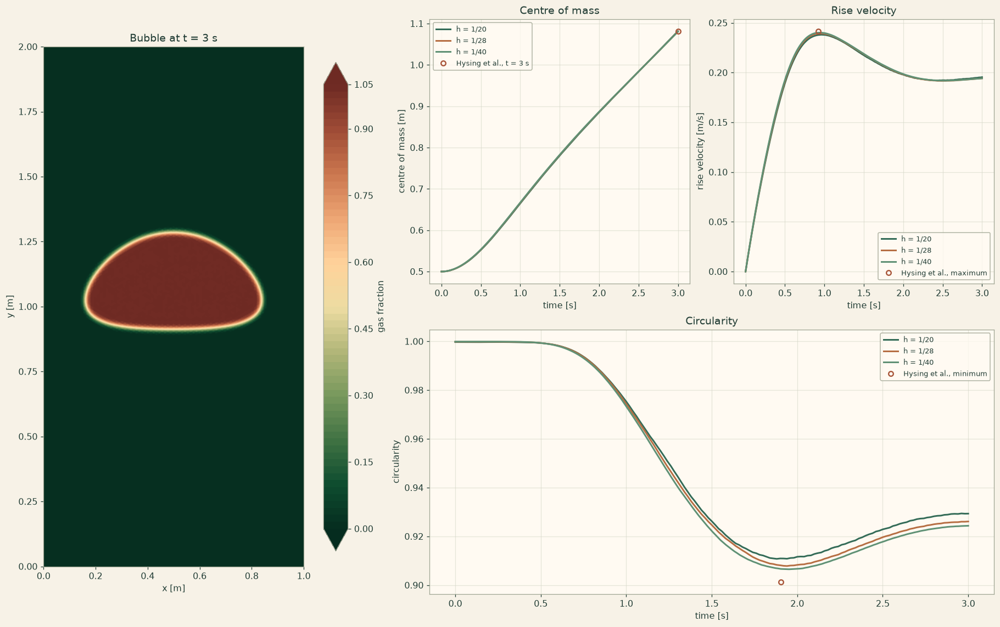
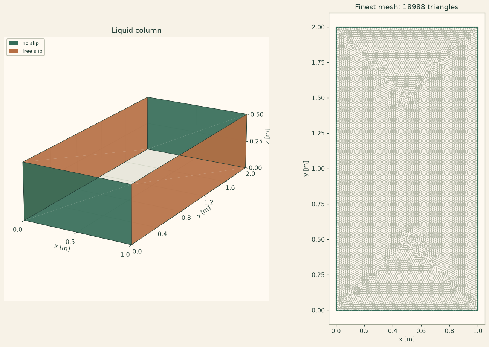

Docs › Examples › Rising bubble benchmark
Two-phase flow · 2D
Rising bubble benchmark
A gas bubble rises through a liquid ten times as dense, flattens and develops a dimpled rear: the quantitative two-phase benchmark of Hysing et al. on three meshes.
Run locally with OneSimulation. The example downloads are free. Running them requires an activated runtime. OneSimulation 1.0 · CPython 3.13 on macOS (Apple Silicon), Ubuntu 22.04 (x86-64), and Windows x64. Installation and activation · View pilot plans. Scope of the reference checks.


What it computes
OneSimulation cuts the liquid column from a STEP part and solves the two-phase Navier-Stokes equations with Taylor-Hood elements; a level set with geometric redistancing carries the interface, density and viscosity jump across it, and surface tension enters as a semi-implicit continuum surface stress. The script that builds the STEP file comes with the notebook.
What it checks
At h = 1/64 the 9,687-node mesh gives a maximum rise speed of 0.2410 m/s, a minimum circularity of 0.9047 and a final centroid height of 1.0815 m. Their benchmark deviations are −0.28%, +0.38% and +0.02%. Both extremum times agree within 1%, and the relative volume change is 2.2 × 10⁻¹⁶.
Geometry
Save the STEP file rising_bubble_benchmark.step next to the notebook before running it.


The geometry script
The script rising_bubble_benchmark_geometry.py builds the geometry with the CAD objects of OneSimulation and writes the file. Change a dimension there, run it, and run the notebook again.
"""Geometry of the OneSimulation example "Rising bubble benchmark".
Builds the liquid column of the rising-bubble benchmark, 1 m wide and 2 m high, as a slab 0.5 m deep
with the CAD objects of OneSimulation and writes rising_bubble_benchmark.step. The faces are named
floor, lid and sides; the example computes on the cross-section at half depth.
"""
from onesim.cad.d3 import Box
column = Box(length=1.0, width=2.0, height=0.5)
column = column.grouped(floor=column.boundaries.y_min, lid=column.boundaries.y_max,
sides=column.boundaries.x_min | column.boundaries.x_max)
column.save("rising_bubble_benchmark.step")The notebook
The complete notebook, cell by cell. Run it to produce the figures and the comparison printout.
A circular bubble of radius \(r_0=0.25\) m starts at rest at \((0.5, 0.5)\) m in a liquid column of \(1\times2\) m. Buoyancy lifts it; on its way up it flattens into an ellipse and develops a dimpled rear while surface tension keeps it in one piece. Liquid (index 1) and gas (index 2) are two immiscible incompressible fluids,
with density and viscosity jumping across the interface \(\Gamma\), which a level set \(\phi\) carries with the flow. Test case 1: \(\rho_1=1000\), \(\rho_2=100\) kg/m³, \(\mu_1=10\), \(\mu_2=1\) Pa s, \(\sigma=24.5\) N/m, \(g=0.98\) m/s² (\(Re=35\), \(Eo=10\)).
| face | condition |
|---|---|
floor, lid | no slip |
sides | free slip |
Reference. S. Hysing, S. Turek, D. Kuzmin, N. Parolini, E. Burman, S. Ganesan, L. Tobiska, "Quantitative benchmark computations of two-dimensional bubble dynamics", Int. J. Numer. Meth. Fluids 60, 1259-1288 (2009), test case 1, finest-grid values of the code TP2D: maximum rise velocity 0.2417 m/s at \(t=0.9213\) s, minimum circularity 0.9013 at \(t=1.9041\) s, centre of mass \(y_c=1.0813\) m at \(t=3\) s. The benchmark defines centre of mass and rise velocity as averages over the bubble and the circularity as the perimeter of the circle of equal area over the perimeter of the bubble.
import numpy as np
from onesim.cad.exchange import load
from onesim.materials import NewtonianFluid
from onesim.meshing import TriangularMesher
from onesim.numerics import Numerics
from onesim.numerics.fem import FiniteElement, TaylorHood
from onesim.numerics.linear import SparseDirect
from onesim.numerics.time import BDF
from onesim.physics.hydrodynamics import FreeSlipLaw, LevelSet, NoSlipWall, TwoPhaseFlow, WallShear
from onesim.results import ResultRetentionPolicy, phase_statistics
from onesim.simulation import ExecutionOptions, Problem, Simulation
from onesim.simulation.field_constraints import MeanValue
from onesim.simulation.initial_conditions import InitialValue
from onesim.visualization import plots, theme
theme.set()Geometry and meshes
The cross-section at half depth keeps the face names. Three uniform meshes of quadratic triangles with 1/28, 1/40 and 1/64 m target size form the mesh study.
part = load("rising_bubble_benchmark.step")
column = part.section((0, 0, 1), origin=(0, 0, part.size[2] / 2))
faces = column.boundaries
sizes = (1 / 28, 1 / 40, 1 / 64)
meshes = {size: TriangularMesher(target_size=size).generate(column) for size in sizes}
for h, mesh in meshes.items():
print(f"h = 1/{round(1/h)}: {len(mesh.coordinates):,} nodes, {mesh.cell_count:,} triangles")
fig = plots.figure(1, 2, size=(11, 7))
plots.geometry(part, selection={"no slip": part.boundaries.floor | part.boundaries.lid, "free slip": part.boundaries.sides},
labels=False, camera=plots.Camera(elevation=20, azimuth=-60), title="Liquid column", ax=fig[0])
plots.mesh(meshes[sizes[-1]], groups=("all",), legend=False, title=f"Finest mesh: {meshes[sizes[-1]].cell_count} triangles", ax=fig[1])
plots.show()Model
TwoPhaseFlow takes both fluids, the surface tension, gravity and the interface method. The level set starts as the signed distance to the circle, positive in the liquid. Each BDF2 step first moves the interface with the extrapolated velocity, then solves the momentum and continuity equations with the new density and viscosity and a semi-implicit surface tension. The pressure mean is fixed because all walls are closed.
liquid, gas = NewtonianFluid(density=1000.0, dynamic_viscosity=10.0), NewtonianFluid(density=100.0, dynamic_viscosity=1.0)
flow = TwoPhaseFlow(domain=column.surface, fluids=(liquid, gas), interface=LevelSet(), surface_tension=24.5,
gravity=(0.0, -0.98))
problem = Problem(name="Rising bubble", geometry=column, physics=(flow,), boundary_conditions=(
NoSlipWall(physics=flow, boundary=faces.floor | faces.lid),
WallShear(physics=flow, boundary=faces.sides, law=FreeSlipLaw())),
initial_conditions=(InitialValue(flow.phase, lambda x, y: np.hypot(x - 0.5, y - 0.5) - 0.25),),
constraints=(MeanValue(flow.pressure, 0.0),))
numerics = Numerics(spatial=FiniteElement(element=TaylorHood()), time_integrator=BDF(order=2), linear_solver=SparseDirect())
keep = ExecutionOptions(result_retention=ResultRetentionPolicy(mode="stride", stride=2))
results = {size: Simulation(problem=problem, mesh=meshes[size], numerics=numerics).run(
start_time=0.0, end_time=3.0, time_step=min(0.01, 0.32 * size), execution_options=keep) for size in sizes}Results
phase_statistics returns the bubble volume, centroid, mean velocity, perimeter and circularity at every saved time; the level set keeps the bubble volume to round-off.
statistics = {size: phase_statistics(results[size], flow) for size in sizes}
reference = {"maximum rise velocity [m/s]": 0.2417, "time of maximum [s]": 0.9213, "minimum circularity": 0.9013,
"time of minimum [s]": 1.9041, "centre of mass at t = 3 s [m]": 1.0813}
measured = {size: {"maximum rise velocity [m/s]": s.velocity[:, 1].max(), "time of maximum [s]": s.times[np.argmax(s.velocity[:, 1])],
"minimum circularity": s.circularity.min(), "time of minimum [s]": s.times[np.argmin(s.circularity)],
"centre of mass at t = 3 s [m]": s.centroid[-1, 1]} for size, s in statistics.items()}
print(f"{'quantity':32s}{'Hysing et al.':>14s}" + "".join(f"{f'h = 1/{round(1 / h)}':>12s}" for h in sizes) + f"{'deviation':>11s}")
for name, value in reference.items():
print(f"{name:32s}{value:14.4f}" + "".join(f"{measured[h][name]:12.4f}" for h in sizes)
+ f"{100 * (measured[sizes[-1]][name] / value - 1):+10.2f}%")
print(f"bubble volume change on the finest mesh: {statistics[sizes[-1]].volume_change[-1]:.1e}")Figure
Bubble at \(t=3\) s on the finest mesh (gas fraction) and the three benchmark curves on all meshes; the markers are the extrema of the reference.
fine = statistics[sizes[-1]]
fig = plots.figure(layout=[["shape", "centre", "rise"], ["shape", "circularity", "circularity"]], size=(16, 10))
plots.surface(results[sizes[-1]].field(flow.volume_fraction), time=3.0, limits=(0.0, 1.0), subdivisions=2, label="gas fraction",
xlabel="x [m]", ylabel="y [m]", title="Bubble at t = 3 s", ax=fig["shape"])
plots.line(y={f"h = 1/{round(1 / h)}": (statistics[h].times, statistics[h].centroid[:, 1]) for h in sizes},
points={"Hysing et al., t = 3 s": ([3.0], [1.0813])}, xlabel="time [s]", ylabel="centre of mass [m]",
title="Centre of mass", legend="upper left", ax=fig["centre"])
plots.line(y={f"h = 1/{round(1 / h)}": (statistics[h].times, statistics[h].velocity[:, 1]) for h in sizes},
points={"Hysing et al., maximum": ([0.9213], [0.2417])}, xlabel="time [s]", ylabel="rise velocity [m/s]",
title="Rise velocity", legend="lower right", ax=fig["rise"])
plots.line(y={f"h = 1/{round(1 / h)}": (statistics[h].times, statistics[h].circularity) for h in sizes},
points={"Hysing et al., minimum": ([1.9041], [0.9013])}, xlabel="time [s]", ylabel="circularity",
title="Circularity", legend="upper right", ax=fig["circularity"])
plots.show()Going further
Test case 2 of the benchmark (\(\rho_2=1\) kg/m³, \(\mu_2=0.1\) Pa s, \(\sigma=1.96\) N/m) tears thin filaments off the bubble: change the gas and the surface tension. interface=ConservativeLevelSet() or interface=PhaseField(interface_width=..., mobility=...) switches the interface method without touching the rest of the model, and kinematics=AxisymmetricFlow() on an r-z section computes a rising drop in a tube.